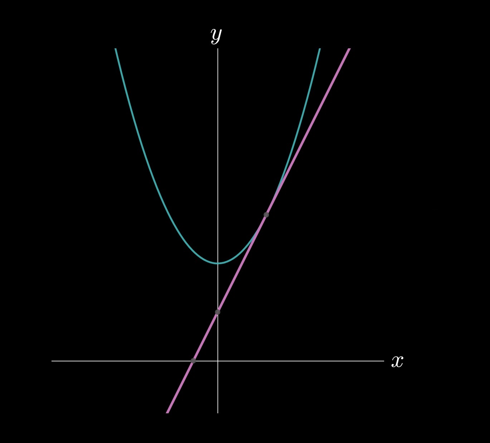
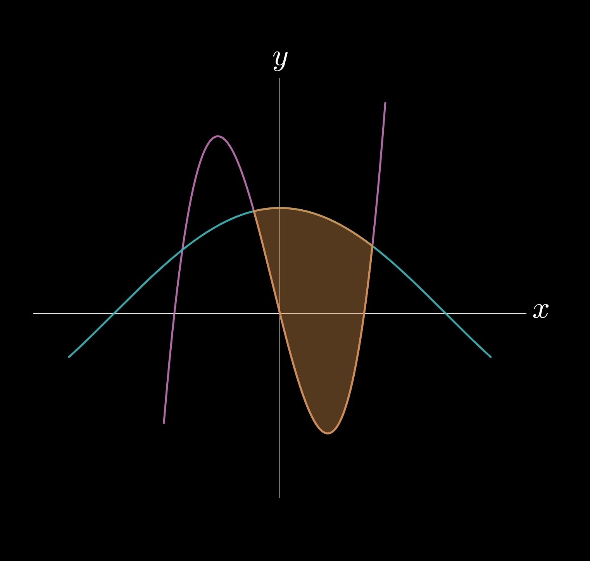
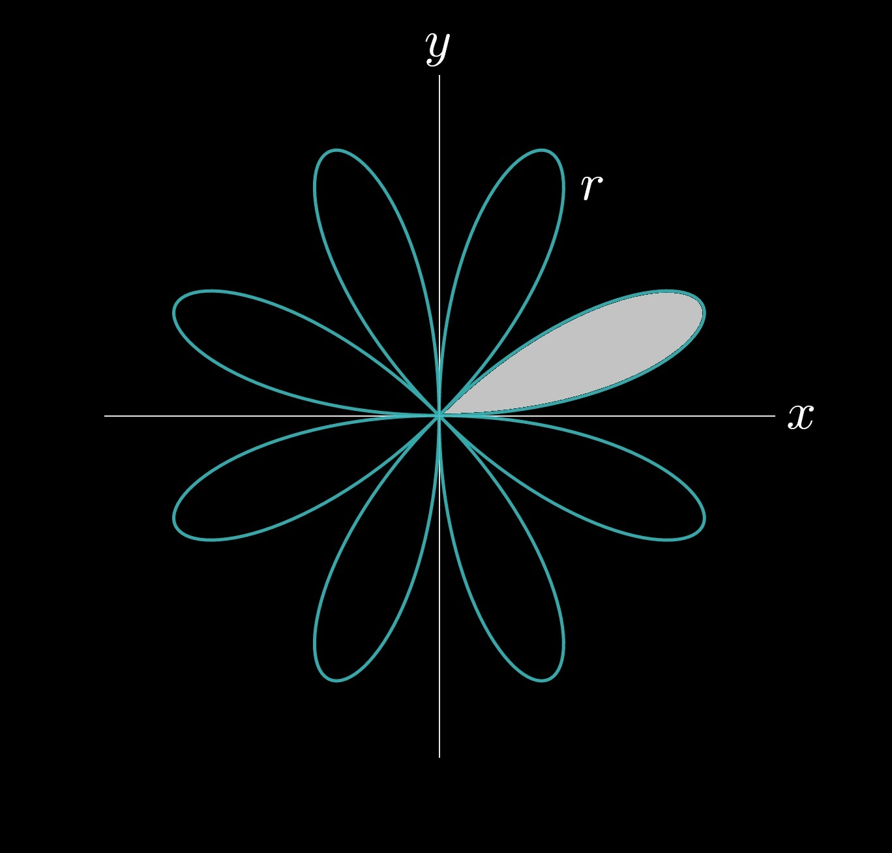
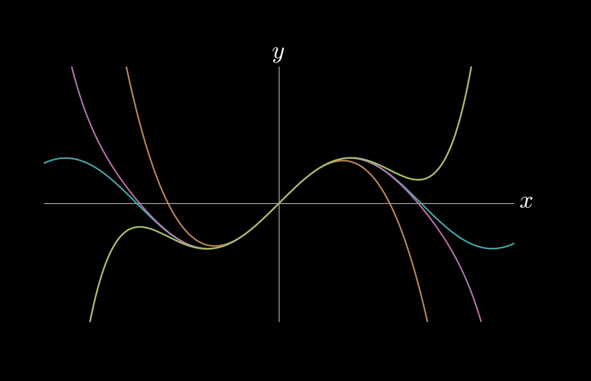

Calculus is often regarded as a difficult class due to its introduction to two new operations—differentiation and integration. At this point, you are expected to be proficient in algebra and trigonometry. This section discusses content found in Calculus I, Calculus II, and Calculus III, as well as some content specific to AP Calculus BC. These section numbers will differ from textbooks and teacher syllabi but generally include the same content.
0 — Pre-Calc Review

2 — Differentiation
3 — Applications of Differentiation
3.1 — The Mean Value Theorem and Rolle's Theorem
3.2 — Tangent Line Approximations
3.3 — Indeterminate Forms and L'Hôpital's Rule
4 — Integration

4.1 — Defining an Antiderivative
4.4 — Mean Value Theorem for Integrals
5 — Further Integration Techniques

5.3 — Trigonometric Substitution
6 — Applications of Integration
7 — Differential Equations

7.1 — Overview of Differential Equations
7.2 — Verifying Solutions to Differential Equations
7.3 — Modeling Situations with Differential Equations
8 — Parametric Calculus

8.1 — Overview of Parametric Functions
8.2 — Differentiating Parametric Functions
8.3 — Position, Velocity, and Acceleration Functions
9 — Polar Calculus
9.1 — Overview of Polar Functions
9.2 — Differentiating Polar Functions
10 — Infinite Series
10.1 — Overview of Infinite Sequences and Series
10.2 — Infinite Geometric Series
10.7 — Absolute and Conditional Convergence